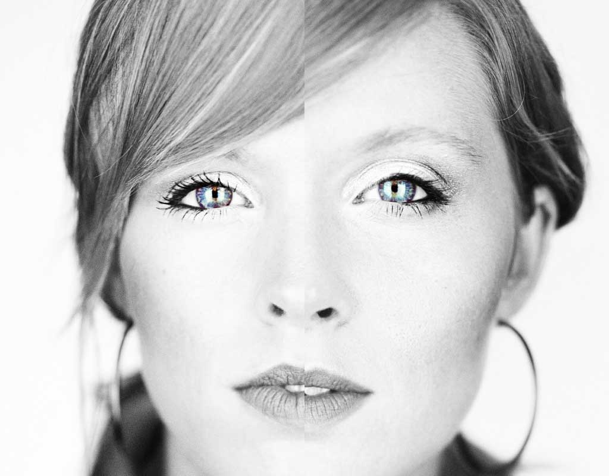
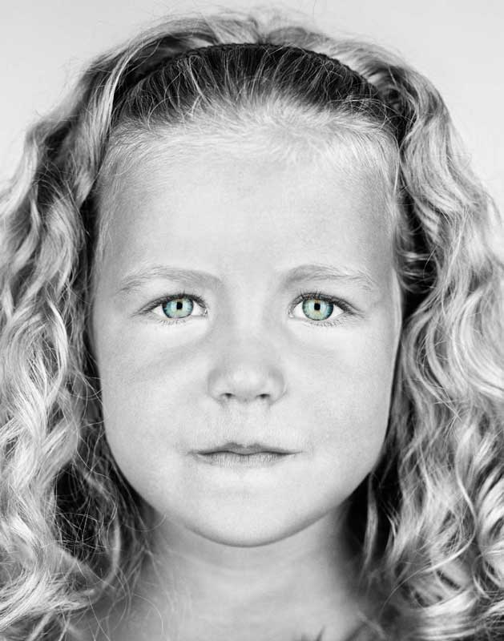

A Thing or Two About Twins
They have the same piercing eyes. The same color hair. One may be shy, while the other loves meeting new people. Discovering why identical twins differ—despite having the same DNAcould reveal a great deal about all of us. By Peter Miller Photographs by Martin Schoeller
Every summer, on the first weekend in August, thousands of twins converge on Twinsburg, Ohio, a small town southeast of Cleveland named by identical twin brothers nearly two centuries ago. They come, two by two, for the Twins Days Festival, a three-day marathon of picnics, talent shows, and look-alike contests that has grown into one of the world’s largest gatherings of twins.
Dave and Don Wolf of Fenton, Michigan, have been coming to the festival for years. Like most twins who attend, they enjoy spending time with each other. In fact, during the past 18 years, the 53-year-old truckers, whose identical beards reach down to their chests, have driven more than three million miles together, hauling everything from diapers to canned soup from places like Seattle, Washington, to Camden, New Jersey. While one sits at the wheel of their diesel Freightliner, the other snoozes in the bunk behind him. They listen to the same country gospel stations on satellite radio, share the same Tea Party gripes about big government, and munch on the same road diet of pepperoni, apples, and mild cheddar cheese. On their days off they go hunting or fishing together. It’s a way of life that suits them. “Must be a twins thing,” Don says. This afternoon at the festival the brothers have stopped by a research tent sponsored by the FBI, the University of Notre Dame, and West Virginia University. Inside the big white tent technicians are photographing sets of twins with high-resolution cameras, collecting their fingerprints, and scanning their irises to find out if the latest face-recognition software can tell them apart. “Although identical twins may look the same to you and me, a digital imaging system can spot minute differences in freckles, skin pores, or the curve of their eyebrows,” says Patrick Flynn, a computer scientist from Notre Dame. But so far, he says, even the most advanced commercial systems can be tripped up by changes in lighting, facial expressions, and other complications, whether imaging twins or others. Because their beards cover half of their faces, the Wolf brothers pose a particular challenge. This seems to amuse them. “After they took my picture,” Dave says, “I asked one guy if I went out and committed a crime and then went home and shaved, would they be able to tell it was me? He kind of looked at me and said, ‘Probably not. But don’t go out and commit a crime.’”


NATURE AND NURTURE Flynn and his colleagues aren’t the only scientists at work here. With the blessing of the event’s organizers, a number of others have set up booths in a small parking lot on the edge of the festival grounds. In the tent next to the FBI project, researchers from the Monell Chemical Senses Center in Philadelphia are asking twins to sip tiny cups of alcohol to see if they react the same way to the taste. Next to them, doctors from University Hospitals in Cleveland are quizzing twin sisters about women’s health issues. Across the courtyard a dermatologist from Procter & Gamble is interviewing twins about skin damage. To these scientists, and to biomedical researchers all over the world, twins offer a precious opportunity to untangle the influence of genes and the environment—of nature and nurture. Because identical twins come from a single fertilized egg that splits in two, they share virtually the same genetic code. Any differences between them—one twin having younger looking skin, for example—must be due to environmental factors such as less time spent in the sun. Alternatively, by comparing the experiences of identical twins with those of fraternal twins, who come from separate eggs and share on average half their DNA, researchers can quantify the extent to which our genes affect our lives. If identical twins are more similar to each other with respect to an ailment than fraternal twins are, then vulnerability to the disease must be rooted at least in part in heredity. These two lines of research—studying the differences between identical twins to pinpoint the influence of environment, and comparing identical twins with fraternal ones to measure the role of inheritance—have been crucial to understanding the interplay of nature and nurture in determining our personalities, behavior, and vulnerability to disease. Lately, however, twin studies have helped lead scientists to a radical, almost heretical new conclusion: that nature and nurture are not the only elemental forces at work. According to a recent field called epigenetics, there is a third factor also in play, one that in some cases serves as a bridge between the environment and our genes, and in others operates on its own to shape who we are.
